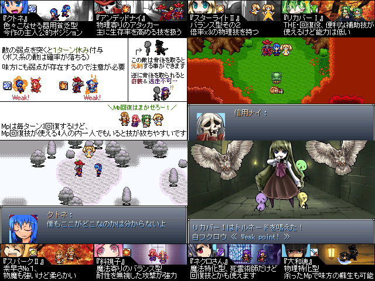

No.19 記憶も力も指先ひとつで |
|
 |
|
| 作者：牧場の牛肉 | |
| ツクール：2000 | |
| ジャンル：やるゲ | |
| 配信/投稿：可能 | |
| 作者コメント： 突如現れた白銀の世界と、おかしくなってしまった人々 一部の記憶を失ったクトネと道中で会う仲間達が 白銀の世界の謎を解く為色々な所へ行って活躍します 過去作の「やさしい雨はいつ降る」に似たシステムのデフォ戦ゲーです、 話の繋がりは一切ないのでプレイしてなくても大丈夫 |
|
| 管理人コメント： 会話が想像できないメンバーです。 |
|
| ダウンロード(12.7MB) / 感想掲示板 | |
| 前の作品 / 次の作品 / TOPへ戻る | |